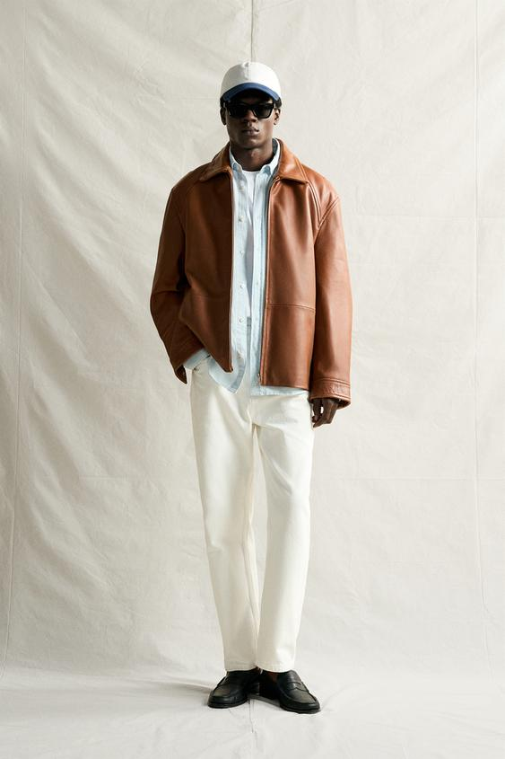
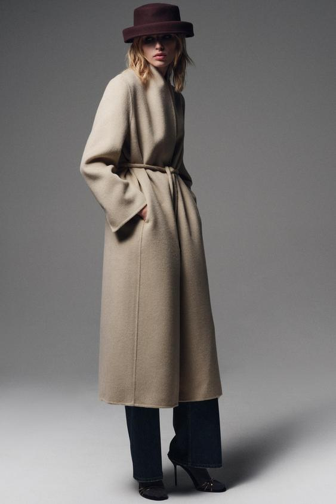
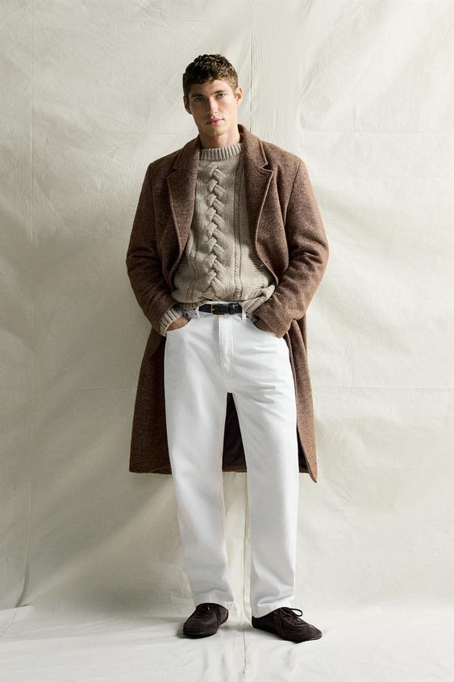
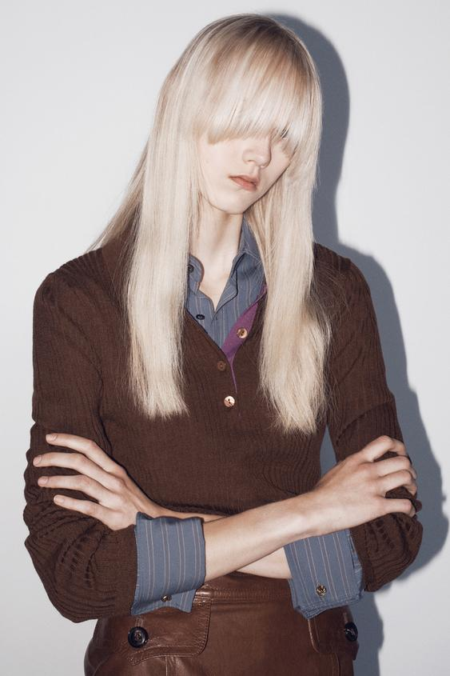
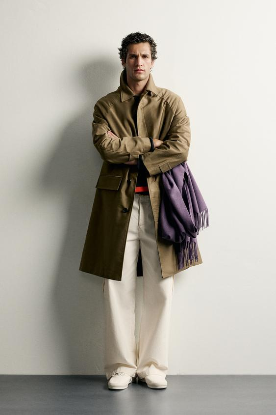
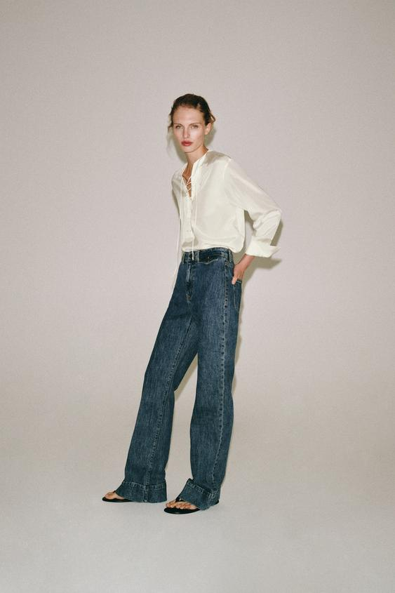
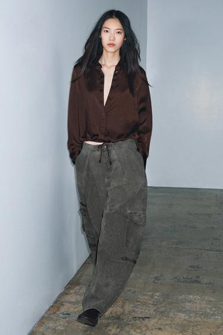
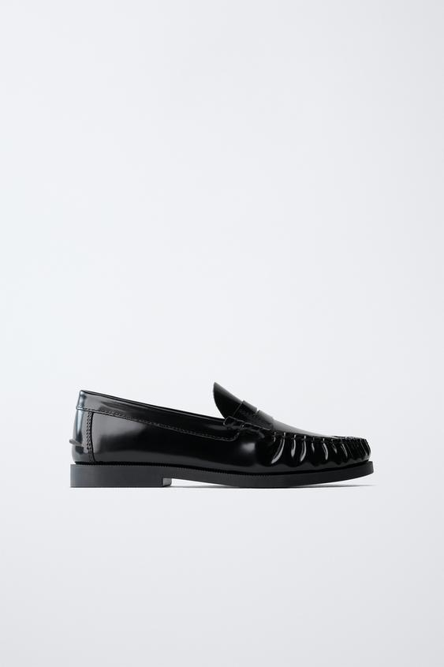
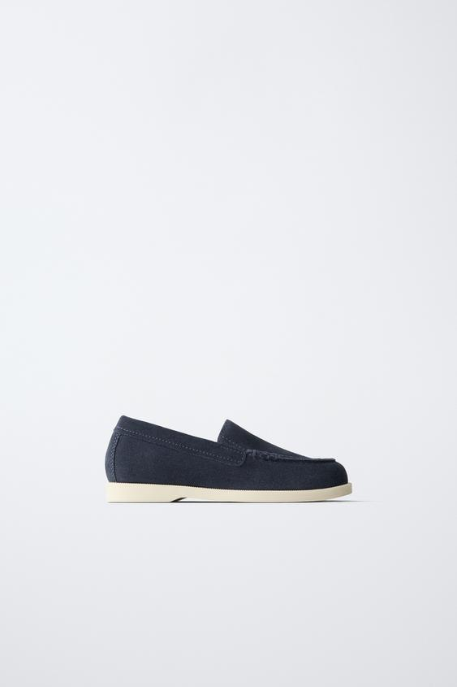
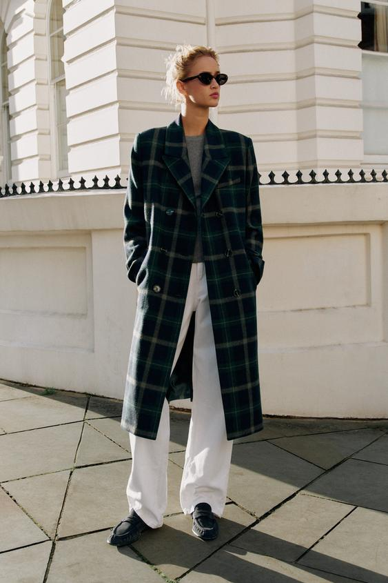

皮革夹克表面的一道亮光，会让衣服的转折显得清楚；羊毛大衣细密的绒感，会使同样的转折显得柔和；薄衬衫垂下来的细褶，又让人注意到身体的动作。服装给人的感受，一部分就来自这些可见的差别。
但“皮革显得硬朗、羊毛显得温柔、丝显得优雅”仍然过于笼统。同一种原料，经过不同的织造、表面处理和裁制，可以呈现很不一样的状态。以下结合十幅 ZARA 官方图片，具体分析材质怎样形成光泽、纹理与褶皱，以及它们进入外套、衬衫和鞋履之后，怎样参与一套造型。
看材质，先分清原料、结构和表面
“羊毛”“棉”“丝”说的是纤维原料。“针织”与“梭织”说的是纱线怎样组成布：针织由线圈相互连接，梭织由两组纱线交织。“缎面”通常涉及缎纹织物形成的平滑表面；它可以采用丝，也可以采用聚酯纤维等原料。它们回答的是不同问题，不能放在同一层面替换。
皮革的情况也类似。表面平滑的皮革、带细绒的皮革和经过漆面处理的皮革，即使都属于皮革，反射光线的方式也有明显差别。把它们一概归为“皮质”，会错过最影响外观的部分。
观察服装时，可以先找三个位置：平整的衣身怎样接住光，肘部或腰部怎样形成褶皱，衣领和下摆怎样保持形状。平面显示光泽与纹理，弯折处显示衣服如何转向，边缘则让人看见轮廓的清晰程度。几处连起来，比单独记住一种材料对应什么气质更有用。
本文的材质名称依据官方商品说明，具体感受来自图片细读。照片能够展示表面与形态；贴肤感、重量、透气性和实际保暖程度，需要结合成分、工艺及实物判断，不能从画面直接读出。
皮革短夹克：清楚的表面，也可以形成轻松的穿着

图1：皮革短夹克与浅色衬衫、长裤的搭配。来源：ZARA官方原页。
图1中，棕色夹克最明显的特点，是衣身上较连续的表面。领口、前襟和袖子转折处有亮部，较暗的部分则形成大片完整颜色。眼睛容易沿这些亮暗变化辨认夹克的结构：领子向外翻，袖子在肘部弯曲，下摆在腰部附近结束。
官方将它描述为纳帕皮革夹克。这里不必先把“纳帕”理解成一种固定气质，照片中值得看的，是皮面既能保留衣身的体积，又允许袖子形成圆缓的折弯。它没有处处绷紧，也没有堆满尖锐细褶。皮革的存在感来自表面的完整和转折的可见，并不要求整件衣服像盔甲一样坚硬。
短衣长也参与了效果。夹克在腰附近收住，浅色衬衫下摆继续向下露出，下面又接浅色长裤。棕色皮面被限制在上半身，没有把人物从肩到脚都包在同一种表面里；领口和前襟敞开，里面的浅色形成穿插，皮革因此显得更适合日常穿着。
如果把内搭也换成大面积发亮的深色表面，画面的连续反光会增多，上半身的分量也可能变重。这是假设比较，它说明原图中浅色衬衫的作用：给皮面留出边界，同时带来另一种较平静的表面。所谓皮革“硬朗”，在这套造型里被衣长、开合方式和内搭共同调节了。
皮革外套的衣领、肩部和下摆能保持什么形状，还与皮料厚薄、柔软程度及内部结构有关。机车夹克的拉链、压线与收紧轮廓，可能把转折强调得更强；宽松的皮衬衫则可能让人更多看到下垂。仅凭“真皮”两个字，并不能判断最终外观。对于图1，短夹克、平滑皮面和浅色上下装的配合，才构成了它具体的穿着状态。
羊毛大衣与针织衫：同一种纤维，为什么能有两种形态

图2：系带羊毛混纺长大衣：绒感表面与较大的弧形褶皱。来源：ZARA官方原页。
图2的浅色长大衣，首先让人看到的是较厚的领口、包围身体的衣身和腰带收束后留下的长褶。表面有细密的绒感，明暗从亮到暗过渡得较缓，袖子弯折处也呈现较大的圆弧。相比图1皮面的局部亮光，它的表面信息分散在许多细小纤维与纹理里。
这会带来包裹、厚实的视觉感受。高领围住颈部，长衣身延续到小腿附近，面料在身体外留出空间；腰带把中间收住，两侧仍然保留体积。柔和的表面与较大的衣服形态叠加，才形成这种感受。只把它归结为浅色，或者只归结为羊毛，都不够完整。
它是一件羊毛混纺大衣，不能把画面中的绒感直接当成纯羊毛含量的证明。混纺说明用了不止一种纤维，至于外观如何，还要看纱线、织物密度和后整理。羊毛纤维自身具有卷曲等特征，但成衣可以把这些特点显露出来，也可以通过加工获得较平整的表面。羊毛纤维资料

图3：人字纹羊毛混纺大衣与绞花针织衫的叠穿。来源：ZARA官方原页。
图3同样是羊毛混纺大衣，却把重点放在另一组关系上。外层的人字纹形成细小、反复的方向变化，翻领与前襟保留清楚的直线；里面的绞花针织衫则出现更大的凸起、凹槽和弯曲纹路。
从稍远处看，大衣给人物建立较完整的外框，里面的针织纹理集中在胸前。两者虽然都带有可见纹理，但尺度不同：人字纹细，先汇成一片表面；绞花大，更容易被逐条辨认。于是，外层保持轮廓，内层增加松软而有起伏的细节。这里的绞花衫依据照片描述织法，不据外观推定它的纤维成分。
这组搭配也说明，粗糙或有绒感的表面并不会必然削弱整齐感。大衣的翻领、门襟和长直衣身仍然很清楚，纹理被组织在一个稳定的外形里。它显得沉静、有分量，与这些直线有关；里面的绞花又使它避免成为一整片平板的外壳。

图4：纯羊毛罗纹针织衫与条纹衬衫的搭配。来源：ZARA官方原页。
再看图4的纯羊毛罗纹针织衫。它贴近手臂和躯干，线圈组成的竖向纹路随着穿着形成明暗。肘部、前臂与腰部的变化，直接影响衣服呈现的曲线。它与图2大衣的区别，并不是羊毛忽然变成了另一种原料，而是织物结构、厚度和服装形态发生了变化。
罗纹可以理解为正反针组织交替形成的条状凹凸。照片里，这些细条让棕色不再是一整片平面；手臂交叠时，纹路又跟着身体方向改变。里面的条纹衬衫在领口与袖口露出，带来较平整、边缘较明确的部分。柔软衣身因此有了几处清楚的收口，细节显得讲究，而不需要依靠明显的珠宝或强烈反光。
羊毛的视觉范围由此展开：长大衣可以显得包裹、安定，翻领大衣可以显得整饬，贴身罗纹针织可以显得细致、亲近。决定效果的，是纤维怎样被做成布，再怎样围绕身体。把羊毛只理解成“温柔”，反而会忽略它组织外形的能力。
棉质风衣：挺括感从哪里来

图5：棉质风衣、浅色长裤与运动鞋，围巾搭在前臂上。来源：ZARA官方原页。
棉常让人想到柔软的T恤，但图5的棉质风衣呈现了另一种状态。肩袖与前臂上的折痕较清楚，口袋、袖口袢和前襟边缘容易辨认；衣身平整部分与折痕之间，存在比较明确的转换。官方说明它采用棉质主面料，并列出了插肩袖、袖口袢、后开衩等结构。
与图2的绒感大衣相比，这件风衣的表面更平，绒毛感更少。前者在大块体积中出现缓慢的明暗变化，后者则更容易让人注意到布面在哪里折了一下、哪条边线延续到哪里。两件衣服都很长，也都能包围身体，带来的感受却不同：一件强调厚实的包裹，一件强调清楚的结构与较利落的折线。
这种差别不能只用棉与羊毛解释。纱线、织物的疏密、后整理以及衬料都会影响一件外套能否保持形状。照片足以支持“这件棉质风衣看起来较挺括”，却不足以确认它采用了哪一种具体织法，更不能由“风衣”二字推定它经过防水处理。
人物的搭配又使它有了变化。浅色长裤和运动鞋让下半身保持日常感，紫色围巾搭在前臂上，增加一处柔软、下垂的布料。围巾的弯曲与风衣较清楚的折线放在一起，外套的结构就更容易被看见。
在不同服装上使用棉，观察重点也应随之变化。T恤主要看衣身怎样贴近或离开身体，衬衫要看领口和袖口能否保持形状，风衣还要看大面积衣片、腰带、门襟和开衩怎样活动。同一种纤维进入不同结构，便产生了不同的穿着语言。
真丝与缎面：柔软、光泽和精致感并非一回事

图6：真丝系带衬衫与蓝色牛仔裤：柔软细褶与较清楚的裤装结构。来源：ZARA官方原页。
图6的官方名称是纯真丝衬衫，但它没有从领口到下摆都铺满强烈亮光。浅色衣身上更醒目的，是腰部与袖子附近的细褶，以及领口系带形成的轻薄线条。光在平整部分较均匀，在弯折处才逐渐形成深浅变化。
这张图适合修正“丝一定很亮”的印象。丝是纤维名称，一件真丝衬衫呈现什么样的光泽，还与织法、表面处理及拍摄光线有关。这里不能仅凭照片认定它采用缎纹，也不能因为反光不强，就认为它不是真丝。
它与牛仔裤的关系尤其具体。衬衫腰部的褶皱细而密，牛仔裤则有较宽的裤腿、明显的洗水深浅和清楚的接缝。上衣较细腻，下装较粗放；上衣贴近身体的细小变化，下装保留较大的外形。两种尺度放在一起，使真丝衬衫能够进入日常造型，而不必和整套礼服形态绑定。
领口系带也参与了这种细致感。它只占很小面积，却延长了垂落的线；卷起的袖口又打断上衣从肩到手腕的连续覆盖。画面的轻松，来自这些穿着处理与牛仔裤的共同作用，不能全算在真丝原料上。

图7：棕色缎面衬衫：亮部随着衣身褶皱形成弯曲的线。来源：ZARA官方原页。
图7则是一件官方列作缎面的棕色衬衫。衣身表面出现更明显的亮带：它们沿肩部、胸前和腰间的褶皱弯曲，亮部旁边又有较深的阴影。人的目光因此更容易追随布面起伏，注意力从静止的色块移向衣服如何垂落。
缎纹的一个重要特点，是表面有较长的纱线浮在交织点之间，布面因而较平滑，容易显露光泽。“浮长”就是一根纱线在表面跨过较多根另一方向纱线的长度；理解到这里，就能明白缎面为什么常有连续亮部，不必先记复杂的组织图。原料、纱线与整理还会继续改变具体效果。缎纹基础资料
真丝和缎面由此需要分开看：真丝说明原料，缎面描述的则是织物表面的状态及相关组织。图6与图7展示了两种不同的视觉状态，不是相同光线、相同颜色下的材料实验。它们不能用来比较哪种原料“更高级”，却可以说明，选择衬衫时应分别确认成分与外观，而不能把亮光直接当成真丝的标志。
亮面也并不自动意味着隆重。图7把有光泽的衬衫放在较宽松、表面相对平静的灰色长裤上，亮部主要集中在上半身；下半身的体积较大，却没有同样强烈的高光。上衣负责吸引视线，裤装为它提供较安定的背景。精致感在这里来自有光泽与较少光泽之间的分配。
如果希望在现有衣服里加入一件缎面单品，值得先观察它在日常光线下亮到什么程度，以及褶皱出现在哪里。同样一条缎面裙，腰臀处被拉紧和自然垂下时，亮暗的位置会改变；衣服是否合身，也因此直接影响材质的呈现。只看平铺商品图，很难把这部分判断做完。
同样是皮鞋，漆面与绒面为什么带来不同感受

图8：带漆面处理的黑色皮革乐福鞋，鞋面有连续高光。来源：ZARA官方原页。
图8的黑色乐福鞋采用皮革，并有漆面处理。鞋侧与鞋头留下较强、较连续的亮部，鞋面的弯曲因此容易辨认。鞋子在整套造型中占的面积不大，这样的亮部却可能让脚部成为一个清楚的视觉落点。
漆面带来的“精心打理”感，一部分来自平滑、完整、反光明确的表面。在日常经验中，这种表面也容易与擦拭、保养和较正式的穿着联系起来。不过，图中的圆缓鞋头、褶皱细节和低鞋底仍然保留轻便形态；表面光亮，并没有使它自动等同于正装系带鞋。

图9：蓝色绒面皮革乐福鞋：细绒表面、明线与浅色鞋底。来源：ZARA官方原页。
图9是另一款蓝色绒面皮革乐福鞋。鞋面没有与图8相同的大片亮带，表层呈现细小的绒感，接缝与明线更显眼。光泽较弱，鞋头与鞋侧之间的转折也显得较缓；浅色鞋底又在底部留出一条清楚边线。
绒面皮革的表面有细绒，细小纤维使不同方向的明暗变化更分散。漆面则借助表面涂饰获得较平滑的反光。皮革鞋面因此既可以强调完整高光，也可以突出细绒与缝线。绒面指经过处理后呈现细绒的皮革表面；相关术语可参照皮革术语说明。
两张鞋图的颜色、鞋楦和鞋底也不同，所以柔和或醒目的程度，并非只由表面决定。将它们并列，是为了辨认反光和纹理的区别。真正放进造型里，还要看鞋头有多宽、鞋底有多厚，以及裤脚露出了多少鞋面。

图10：另一款蓝色绒面乐福鞋的全身造型：格纹长外套与浅色长裤。来源：ZARA官方原页。
图10让这件事更清楚。另一款蓝色绒面乐福鞋被放在浅色长裤下，裤腿从膝部向下形成较大的平面，脚部用深色收住；上面的格纹长外套已经有较明显的线条和纹理。鞋面的绒感没有再制造一组强烈高光，脚部的深浅关系因此比表面闪光更突出。
两张图分别展示了绒面的近处细节，以及较哑的表面进入全身穿着后的作用。
可以设想，把图10的鞋换成一双反光明显、形状相近的黑鞋，脚部的亮点可能增加，整套造型也会更强调精整的收尾。但如果同时把鞋底加厚、鞋头加宽，改变的就不只是光泽，人物底部的体积也会随之增加。判断鞋子气质时，表面与形状应放在一起看。
搭配材质，关键在于几种表面怎样同时出现
从这些造型中，可以归纳出三种值得实际比较的关系。第一种是平滑与粗细纹理的关系：图3大衣的细人字纹围绕着较大的绞花，图6较细腻的衬衫搭配接缝清楚的牛仔裤。肌理就是表面纹理。这些组合让外层、内层或上下装各自的表面特点更容易辨认。
第二种是亮面与哑面的面积关系。图1皮夹克的亮暗留在上半身，浅色衬衫和长裤把它分隔开；图7的光泽集中在衬衫，宽松长裤没有继续叠加强烈反光。少量亮面可以成为细节，大面积亮面则可能成为主要印象。两种做法都可以成立，关键是它们是否符合整套衣服希望强调的部分。
第三种是支撑外形与跟随身体的关系。大衣的长衣身、风衣的门襟和皮夹克的短下摆，帮助人物形成较清楚的外框；针织衫、丝衬衫的细褶，则让人看到身体的活动。外层有结构、内层较柔软，是这些图片中的一种组合。反过来，柔软长外套配一件较挺的衬衫，也可以在领口建立清楚的局部。
因此，“材质统一”不必理解成从头到脚都用同一种材料。若每处都光亮，每处都粗糙，或者每处都厚重，差异反而不容易显现。让一部分维持较平静的表面，另一部分显示纹理或光泽，常能使服装的层次更易辨认。这里的层次，是具体可见的区别，不是必须增加更多件衣服。
把材质判断用到自己的衣服上
选择一件单品时，可以暂时放下对原料的好坏排序，先明确希望它在整套衣服中改变什么。下面这些比较，比单独寻找一种“显贵面料”更接近实际穿着。
| 想比较的效果 | 重点观察的位置 | 可以怎样试 |
|---|---|---|
| 更明确的光泽 | 胸前、肩部、鞋头是否有连续亮部 | 在相同光线下，与衣柜里的一件哑面单品并列 |
| 更柔和的表面 | 是否有细绒，明暗过渡是否分散 | 比较平滑皮革、绒面或绒感织物，不只看颜色 |
| 更清楚的外形 | 衣领、门襟、肩部和下摆能否保持边缘 | 敞开与扣合各看一次，抬手、坐下再观察 |
| 更多身体动作感 | 布料在哪里垂下，褶皱是细密还是宽大 | 走动后看衣服是否回到希望的位置 |
| 更容易融入已有搭配 | 新单品与其他衣服的纹理、光泽和厚薄差异 | 用同一条裤子或同一件上衣比较，减少同时更换的条件 |
成分标签也值得分层阅读。外套的主面料、里料和填充物可能不同，鞋子的鞋面、内里和鞋底也可能分别标注。商品名中的“羊毛混纺”并不等于整件衣服都是羊毛；一双鞋写着皮革，也不能由此推定鞋底与内里都是同一种皮革。
实物试穿时，再把照片无法提供的部分补进来：领口碰到皮肤是否舒服，走动时布料是否妨碍动作，坐下后褶皱是否集中在不希望的位置，鞋面弯折处是否合脚。视觉上喜欢的表面，需要与实际穿着相合，才能在日常中保持这种状态。
皮革、羊毛与丝没有各自固定的一种气质。看清表面怎样反光、纹理有多大、褶皱如何形成，以及它们被放在身体的什么位置，才能具体理解一件衣服为什么显得利落、柔和、细致或有分量。ZARA这些图片提供的，是能够逐处观察的例子。
图片与资料
十幅图均来自图注对应的ZARA官方商品页，图片版权归原权利人；保留原图比例用于相应商品与造型分析。商品页面、地区和陈列可能变化，本文不提供库存与价格建议。资料核对于2026年11月，图像观察与原料名称分别对应照片及商品说明。
材质基础参照Woolmark羊毛纤维资料、CottonWorks缎纹条目及Leather Naturally皮革术语表。CottonWorks全文访问受限，本文仅采用其公开索引可见的缎纹基本定义；未据此扩展性能或使用效果判断。
留言
由 Disqus 提供。